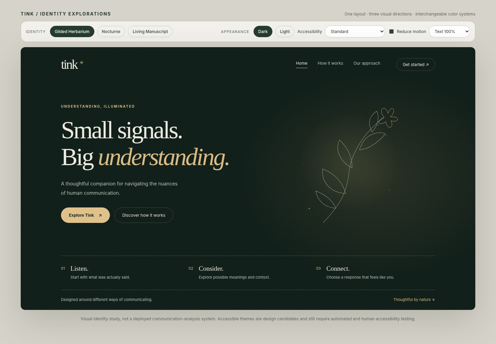
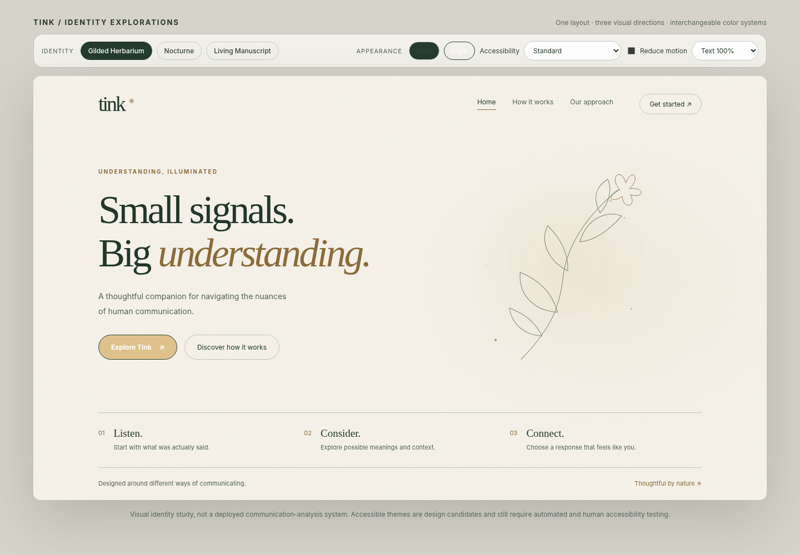
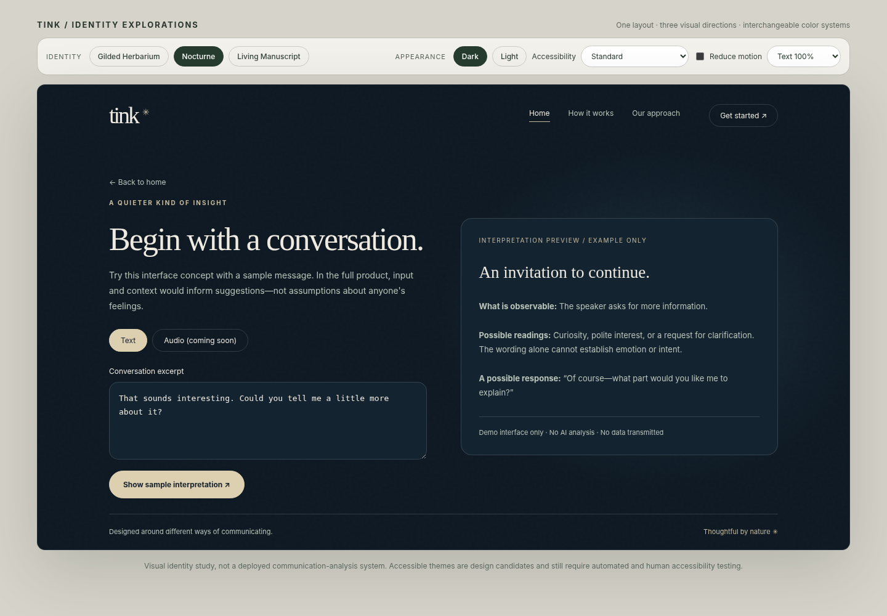

Status: HackTX design direction and working visual prototype, October 23, 2026
Working line: Small signals. Big understanding.
Audience: design, frontend, interaction, accessibility, and demo teams
North star: Quiet magic. A premium, serene communication-assistance experience: carefully crafted like a luxury chocolate bar, not decorated like a fantasy game.
Keep the name tink. and the established landing-page/application layout. Make the Gilded Herbarium the primary identity, with Nocturne's exceptionally restrained luminous effects and Living Manuscript's paper-like composure. Light/dark appearances are siblings, not separate websites. Accessibility preferences alter rendering without altering the core structure or task sequence. There are no characters, fairies, silhouettes, wings as characters, or Tinker Bell depictions in the final UI.
Tink's story connection is conceptual: small signals, delicate mechanisms, craftsmanship, illumination, and making subtle meaning visible. It should not resemble official Peter Pan/Disney branding, use a recognizable character silhouette, or depend on someone knowing the source material.
What must not happen: no forest photographs beneath body copy; no vines framing every card; no glowing outlines around every control; no hundreds of particles; no visual overload; no status conveyed by color alone; no claim that the interface can reliably read people's hidden intentions.

Tink makes complicated communication feel more approachable through calm, thoughtfully qualified interpretation. It is an assistive companion, not a mind-reading tool, clinical diagnostic device, or replacement for asking another person what they mean.
Tone: short, warm, concrete, non-judgmental. Say “One possible reading…” rather than “They are definitely upset.” Avoid rigid emotion labels and diagnostic language. When uncertainty matters, show it visibly.
The attached concept boards are exploration artifacts, not production specifications. Some contain busier treatments that have since been rejected. The interactive HTML prototype and its screenshots are the better reference for the restrained direction.

Create a single proprietary illuminated filament graphic: a fine line that can read as a plant stem, a thread of light, or a waveform. It is a metaphor for finding meaning in small signals.
Do not use a winged character, a fairy icon in the wordmark, or hundreds of twinkling points. A wordmark tink. in a high-quality serif (e.g., Fraunces or another appropriately licensed face) plus a small abstract spark/stem is enough. Prefer a legible UI sans-serif (e.g., Inter) for all dense text and controls. Do not use script fonts for functional interface copy.
Composition: editorial first. Large text, short sentences, strong horizontal alignment, intentional empty space. Premium equals restraint and exactness, not darkness by itself.
Visual budget (directional, not a measurement): around 90% calm background, typography, and functional surfaces; about 10% botanical/light detailing. One hero focal ornament per screen, never multiple competing focal points.
Decoration rules:
Spacing/type targets: 8px-based spacing scale; main desktop content width approximately 1120–1190px; generous hero padding; 16px body text default; body line-height 1.5–1.7; 12–16px typical card radii; comfortable touch targets. These are starting guidelines, not limits that should break responsive design.
Responsive: one layout and one content hierarchy across themes. On smaller screens the hero becomes stacked; ornamental art can shrink or be hidden. The primary CTA and critical text must remain usable on narrow viewports.
Appearance is distinct from accessibility. A user's choices must compose cleanly:
Theme configuration
├── appearance: system | light | dark
├── contrast: standard | high
├── color-vision palette: default | deuteranopia-friendly | protanopia-friendly | tritanopia-friendly
├── sensory: standard | low-stimulation
├── motion: system | reduced
├── typography: default | large | extra-large
└── comprehension: standard | simplified
The current prototype groups some accessibility combinations into one dropdown. That is useful for comparison but the production implementation should expose independent settings, with sensible conflict precedence (high contrast should override purely decorative accent choices). Presets for color-vision differences are candidates requiring testing with color-vision simulations and real people. Do not assert they are universally “safe.”
| Token | Dark | Light |
|---|---|---|
surface.base |
#101E19 |
#F5F1E8 |
surface.raised |
#1B2B23 |
#EBE9DF |
text.primary |
#EEEAE0 |
#21372A |
text.secondary |
#B9C4B9 |
#526254 |
accent.decorative |
#D9BB83 |
#8B6B3A |
action.fill |
#DFC28B |
#244330 |
action.text |
#18241D |
#FFFFFF |
botanical.line |
#93A78E |
#6C7E66 |
These values reflect the visual prototype, not an approved contrast audit. Verify actual color combinations programmatically; ensure color is never the sole status channel. Use tokens, not hex colors hardcoded into components.
High contrast: near-black/white base pairs; strong focus indicators; no background glow or textures; preserve meaning and layout. Low stimulation: restrained palette, static visuals, no decorative particle animation, but maintain readable text contrast. Color-vision modes: use accessible contrast plus shapes/text/icons for every semantic state. Status may be Observed, Possible, Uncertain with labels and distinct symbols; never green/orange/purple alone.
:root { --surface: #f5f1e8; --text: #21372a; --action: #244330; --action-text: #fff; }
[data-appearance="dark"] { --surface: #101e19; --text: #eeeae0; --action: #dfc28b; --action-text: #18241d; }
[data-contrast="high"][data-appearance="dark"] { --surface: #000; --text: #fff; --action: #ffe36d; --action-text: #000; }
.button-primary { background: var(--action); color: var(--action-text); }
@media (prefers-reduced-motion: reduce) { *, *::before, *::after { scroll-behavior: auto !important; animation-duration: 0.01ms !important; } }
Persist explicit user preferences locally with consent-aware application storage; “system” should follow OS preferences. Avoid a flash of the wrong theme on first render. Make resets easy. No theme may reorder primary buttons, remove critical content, or change the route through the app.
Keep the existing split layout: wordmark/navigation, “Small signals. Big understanding.”, a two-line description, primary/secondary CTA, and one exquisite botanical filament illustration opposite the text. Below the fold: Listen / Consider / Connect as a sparse three-step row separated by hairlines—not large icon cards.
No: character renders, jungle backgrounds, dense flower borders, feature-card walls, particle overlays.
One clear focal task: Start with a conversation. Let people enter text with no microphone or camera required. Later allow audio, video and live modes as optional, permissioned extensions. No automatic recording; clearly mark microphone/camera state and provide pause/stop.
Sample mode must be obviously labeled as a demonstration. The provided HTML only implements a text example and a predetermined interpretation, not an AI model. It intentionally does not record, upload, or analyze actual audio/video.
Use hierarchy: what is observed → possible interpretations → uncertainty / alternatives → useful response suggestion. Separate evidence from speculation. Example: “The speaker asked for more information” (observed); “They may be curious or requesting clarification” (possible); “Text alone does not confirm emotion” (limitation); “You could ask what they’d like to know” (action).
Avoid “72% positive” unless a defensible model is actually calibrated, evaluated, and adequately explained. Prefer evidence-backed uncertainty to ornamental percentages. The results need text-first presentation that can be read aloud by assistive technology.
Place accessible theme controls in a persistent settings area, and a small appearance shortcut in the header. Organize into Appearance, Reading/Comprehension, Motion/Sensory, Input/Media, Language, and Privacy. Every option should be available without disclosing a disability.

Target WCAG 2.2 AA as a development goal, not as an achieved certification. Verify at least:
Recommended QA matrix: desktop light/dark, mobile light/dark, high contrast in each, each color-vision preset in each, low-stimulation, 200% text, 400% zoom, keyboard-only, NVDA or VoiceOver, and browser/system reduced-motion. Check all key screens, not just the landing page.
Motion rule: a visual cue must serve a purpose. 120–240ms hover/focus shifts are appropriate when they are nonessential; some users should see no movement. Add only a few fixed firefly-like lights in the hero and optionally one quiet light sweep on completed actions. Avoid looping sparkles in the analysis workspace.
Iconography: thin, consistent line icons. Neutral abstract spark or stem for brand; practical UI icons only when accompanied by labels in major navigation. Do not turn the cursor into a fairy or give the user an animated companion to manage.
Microcopy samples:
Priority 0 — reliable demo story. Pick a defensible text-based scenario that works reliably in front of judges. Show the user selecting a preferred theme and receiving a cautious interpretation of observed text. Make the product purpose clear immediately.
Priority 1 — foundations. Component styles, semantic tokens, light/dark, responsive landing/input/results shell, well-labeled text input, keyboard navigation, consent boundaries.
Priority 2 — inclusion. High-contrast themes, reduced motion, text scale, caption/transcript path if media exists, color-independent semantic states, preferences persistence, screen-reader QA.
Priority 3 — core inference (if implemented). Input processing, evidence vs interpretation separation, alternatives, uncertainty, optional feedback. Consider fairness, generalization across expression styles/languages, privacy and consent; do not promise emotion-reading accuracy without testing.
Priority 4 — one signature flourish. Refine the illuminated filament as an SVG, then add just one subtle transition. Refuse ornamental scope creep until the product is functional and accessible.
Priority 5 — judge rehearsal. Show the same layout in dark, light, high contrast, and low-stimulation. Demonstrate text-only operation and control without color or animation. Explain user needs carefully without claiming to represent populations that were not studied.
Open: prototype/index.html in a modern browser. It is a single-file standalone concept; no build system or network connection is required.
The prototype includes three identity buttons (Gilded Herbarium / Nocturne / Living Manuscript), dark/light, contrast/color-vision/low-stimulation visual presets, a reduce-motion control, 100%/112%/125% text scaling, a responsive layout, and a demo text interpretation. The visual presets are not verified accessible palettes; zoom, keyboard and screen-reader tests are still needed. No backend, microphone capture, camera capture, AI inference, deployed authentication, multilingual inference, or saved user profile is implemented.
prototype/index.html — source; open locally.prototype/preview-dark.png — recommended primary visual benchmark.prototype/preview-light.png — same structure in light mode.prototype/preview-nocturne.png — lighting-direction comparison.prototype/preview-analysis.png — actual text-demo interaction screen.prototype/preview-mobile.png — responsive sample.reference-concepts/01-minimal-luxury-exploration.png — later moodboard; not production specification.reference-concepts/02-theme-architecture-exploration.png — later high-level theme explorations; ornamental density is not a target.reference-concepts/03-interface-exploration.png — later UI concept visual; use as inspiration, not the current feature inventory.Final creative recommendation: Build the Gilded Herbarium system; adopt a single illuminated filament from Nocturne, and the generous editorial spacing of Living Manuscript. Less fantasy illustration, more visual craftsmanship.